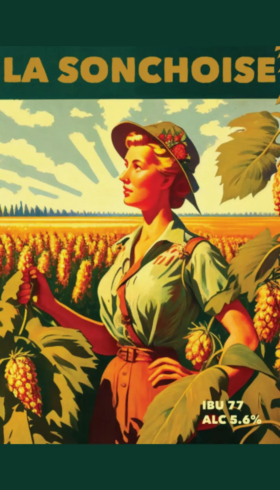
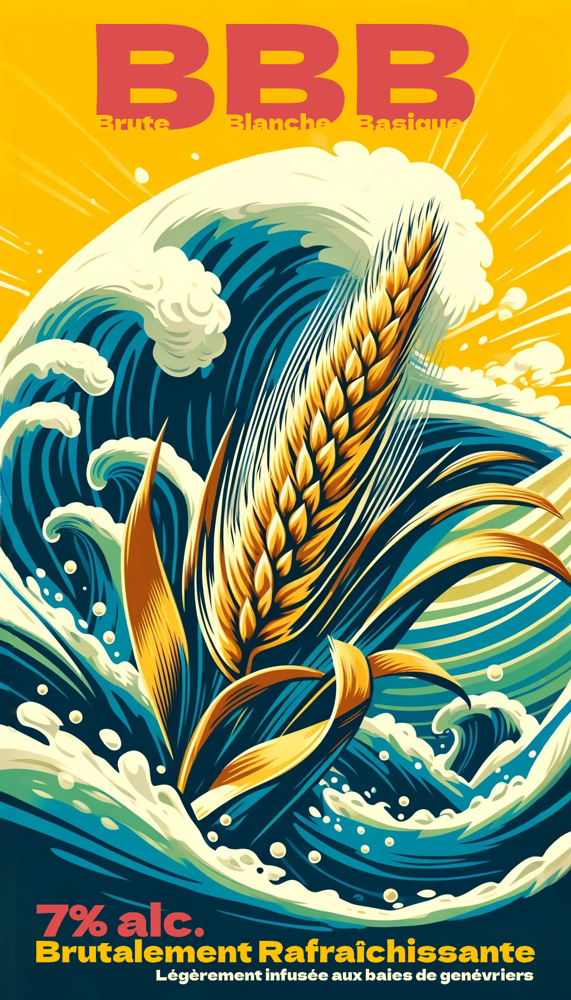
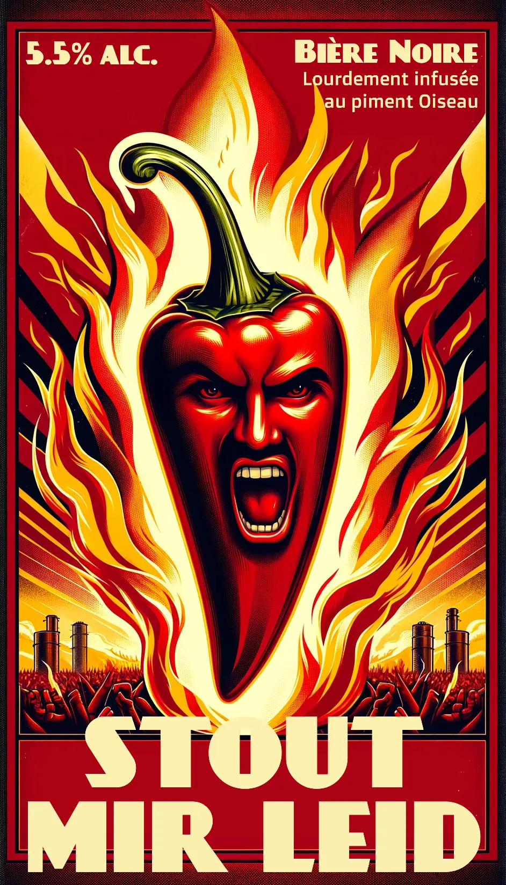

La Sonchoise
L'Originale
La Sonchoise est une West Coast IPA qui se distingue par l’utilisation du houblon Citra, un ingrédient phare reconnaissable à ses notes éclatantes de pamplemousse, de citron vert et de fruits tropicaux. Avec une amertume prononcée, cette IPA s'inscrit parfaitement dans la tradition des bières audacieuses et marquées. Cependant, malgré son caractère fort, elle sait rester rafraîchissante, parfaite pour toutes les occasions.

BBB
Brute Blanche Basique
La BBB, c’est l’histoire d’un accident glorieux ! Née comme une simple Weissbier, légère et rafraîchissante, elle a pris une tournure inattendue pour devenir une bière belge riche en alcool, par une petite erreur de calcul... mais quelle erreur ! Sa puissance est désormais un atout. Elle accompagne à merveille chaque repas, et s’impose comme l’alliée idéale pour les barbecues. Une bière qui incarne l'audace, prête à sublimer chaque moment partagé autour d'une table.

STOUT MIR LEID
Pardon...
Stout Mir Leid, c’est la bière qui ne fait pas de compromis ! Une stout noire, poussée à l’extrême, légère en corps mais lourde en caractère grâce à son infusion audacieuse au piment oiseau. C’est la bière qui frappe fort, celle qui manque cruellement sur les étalages aujourd'hui. Pour ceux qui osent sortir des sentiers battus, c’est la révolution du goût épicé. Le temps est venu de sortir du lot, de laisser derrière les bières fades. Avec Stout Mir Leid, préparez-vous à une véritable déflagration de saveurs !
La Sonchoise DDH
La petite dernière
La Sonchoise DDH, c'est la petite sœur qui n'a rien à envier à l'originale ! Toujours fidèle à l’esprit West Coast IPA, elle pousse encore plus loin le caractère explosif du Citra. Avec une double dose en dry hopping, préparez-vous à une véritable déflagration de saveurs en bouche ! Plus intense, plus audacieuse, elle incarne la puissance brute du houblon. Chaque gorgée est un choc de fraîcheur et d’amertume. Pour les véritables amateurs, La Sonchoise DDH n’attend qu’à être savourée !